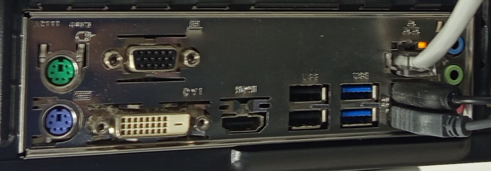
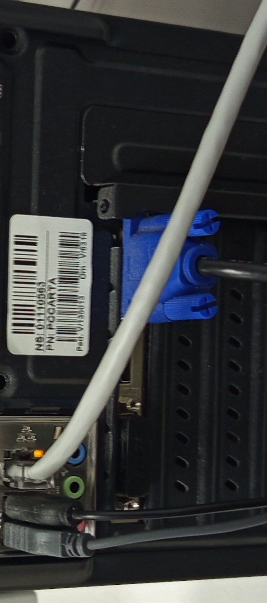

Conectores externos del equipo.
Lista de puertos de la placa Base:
Conectores PS2 —> x2
Conectores DVI —> x1
Conectores VGA —> x1
Conectores HDMI —> x1
Conectores USB 2.0 —> x4
Conectores USB 3.0 —> x2
Conectores RJ45 —> x1
Conectores de audio analógico:
entrada micro (Mic In), color rosa.
salida de altavoces o auriculares (Line Out) , color verde.
entrada de linea (Line In), color azul. Utilizado para recibir audio desde dispositivos reproductores externos.
Lista de puertos de la tarjeta gráfica dedicada:
Conectores DVI —> x1
Conectores VGA —> x1
Conectores HDMI —> x1
Descripción de conectores
PS/2: Fueron los puertos utilizados por ratón y teclado, antes de la aparición del estándar USB. El morado era utilizado por el teclado y requería de una comunicación bidireccional. El mismo conector en color verde, era el utilizado por el raton. Ambos conectores empleaban seis pines.
DVI: Se trata de una salida de video para conectar un monitor. Fué el conector que precedió al actual HDMI, actualmente en desuso.
VGA: Salida de video para conectar un monitor.
HDMI: Salida de video para conectar un monitor, aunque también es utilizado por algunos sistemas de audio. Es el conector que se utiliza hoy en día.
USB: Universal Serial Bus. Es utilizado como interfaz estándar para la comunicación, conexión y suministro de energía entre computadoras y dispositivos electrónicos de distinto tipo. A lo largo de su aparición se han ido incorporando distintas versiones, que varían en velociada de transferencia y capacidad de carga. Ejemplos de versiones; 1.0, 2.0, 3.0, 3.1, 3.2. En cuanto al connector en sí mismmo, también han ido apareciendo varios tipos; USB-A, USB-B, USB-C y micro-USB.
RJ45: es un conector Ethernet-Gigabit, Ethernet GbE LAN. Hoy en día muchas placas bases integran la tarjeta de red, pero no necesariamente debe ser integrada. También es posible utilizar una de las ranuras de expansión de la placa, en caso contrario. En una estación de trabajo o PC, eL conector se suele utilizar para establecer una conexión con el router o switch.
Conectores en uso
De la lista relacionada en este documento, los siguientes puertos están en uso;
El monitor está utilizando la salida VGA de la tarjeta gráfica, conectada a una de las ranuras de expansión PCIe, que proporciona la placa base.
El ratón y el teclado ocupun dos de los conectores USB v2.0; el resto de conectores USB están libres.
Por último, el cable de red ocupa el único puerto disponible de tipo RJ45. Como es un entorno académico, el cable no está conectado directamene al router. En su lugar, la configuración sugiere una conexión a la red de área local(LAN), que presumiblemente pasa por un switch.
{kind=link}

{kind=link}
